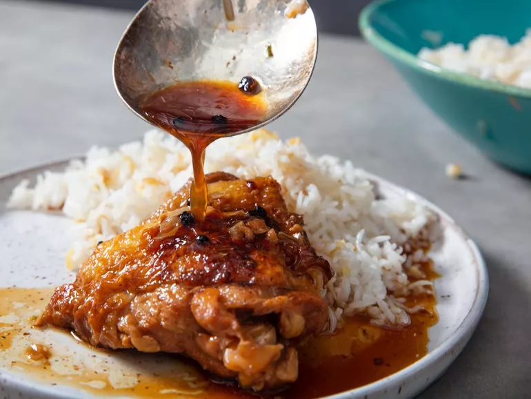

Chicken Adobo

Description
There are two truths about chicken adobo: Every Filipino family has its own recipe (and that recipe is definitely the best), and every chicken adobo tastes better the day after it's been cooked.
Adobo is uniquely Filipino, despite the fact that the word is Spanish and refers to dishes with some surface similarities in Mexico and Spain. But when used to refer to Filipino cuisine, it denotes both a cooking method—basically, a very acidic braise—and the class of dishes produced by that method.
Ingredients
- 1 tablespoon (15ml) canola oil or other neutral oil
- 4 bone-in, skin-on chicken legs, seperated into thighs and drumsticks
- Kosher salt
- 8 cloves of garlic, thinly sliced
- 2 whole fresh bay leaves (or 3 whole dried bay leaves)
- 1 1/2 teaspoons whole black peppercorns
- 1 1/4 cups of water
- 1 cup soy sauce
- 1 cup rice vinegar
- Steamed white rice or garlic fried rice
Directions
- In a heavy-bottomed pot or Dutch oven, heat oil over medium heat until shimmering. Blot chicken dry with paper towels, then season lightly all over with salt.
- Add chicken pieces to pot in a single layer, skin side down, making sure not to overcrowd the pot. Cook until well browned, 6 to 7 minutes. Using tongs, flip chicken pieces and cook until lightly brown on the second side, about 3 minutes. Transfer chicken to a plate and set aside.
- Add garlic, bay leaves, and peppercorns to now-empty pot and cook, stirring constantly, until mixture is very fragrant and garlic turns a light golden color, about 30 seconds. Add water and stir with a wooden spoon, scraping up any brown bits on the bottom of the pot. Add soy sauce and vinegar, return chicken pieces to pot.
Increase heat to high, and bring liquid to a boil. Reduce heat to low, cover, and simmer until chicken is cooked through and tender, about 20 minutes, turning the chicken pieces halfway through.
- To Serve: The chicken is best served after sitting overnight in the refrigerator, but it can also be served immediately, with steamed white rice or garlic fried rice.
Return to homepage